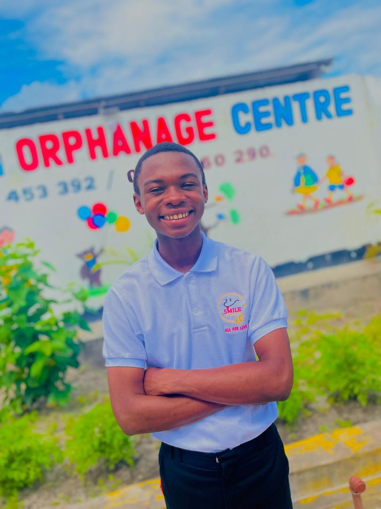
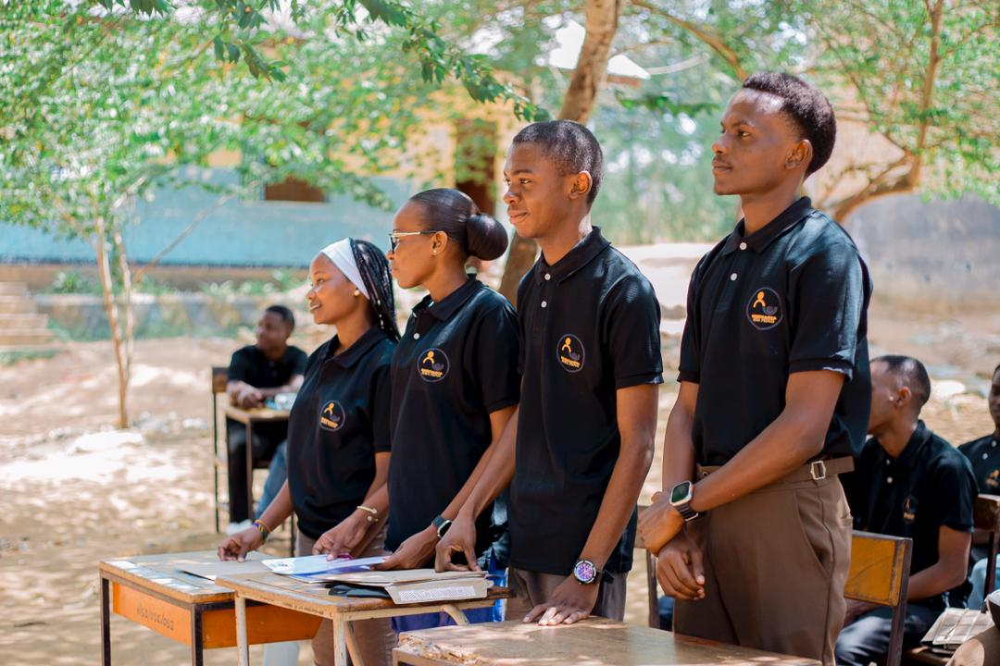

Our Team
Dedicated individuals making a difference every day

Mr. Juma Marcesh
Founder & CEO
With over 5 years of experience in community development, Marcesh leads our foundation with passion and dedication. His vision drives our mission forward.
Ibraah FX
Web developer
With experienceof 4 years in software development

Dr. Michael Okello
Health & Wellness Advisor
Michael ensures our nutrition programs meet health standards and benefit children's development. He brings 12 years of pediatric healthcare experience.

Festo Thomas
Field Coordinator
Festo manages our on-ground operations and coordinates with schools and community leaders across Tanzania. He has 7 years of field experience.
Our Volunteer Network
Behind our core team is a dedicated network of 60+ volunteers who contribute their time, skills, and passion to our cause. Our volunteers come from diverse backgrounds including:
- University Students
- Retired Professionals
- Corporate Employees
- Healthcare Workers
- Teachers & Educators
- Community Leaders
Want to Join Our Team?
Whether as a full-time staff member or volunteer, your skills can make a difference in children's lives.